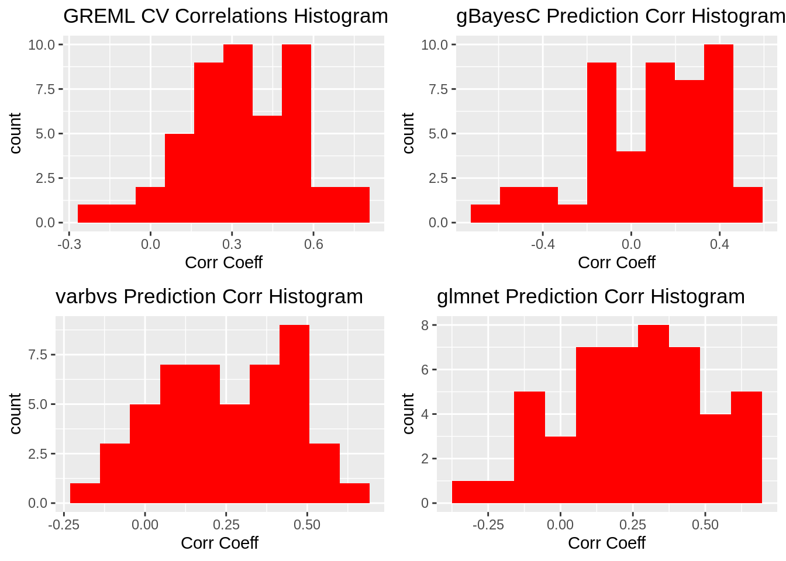
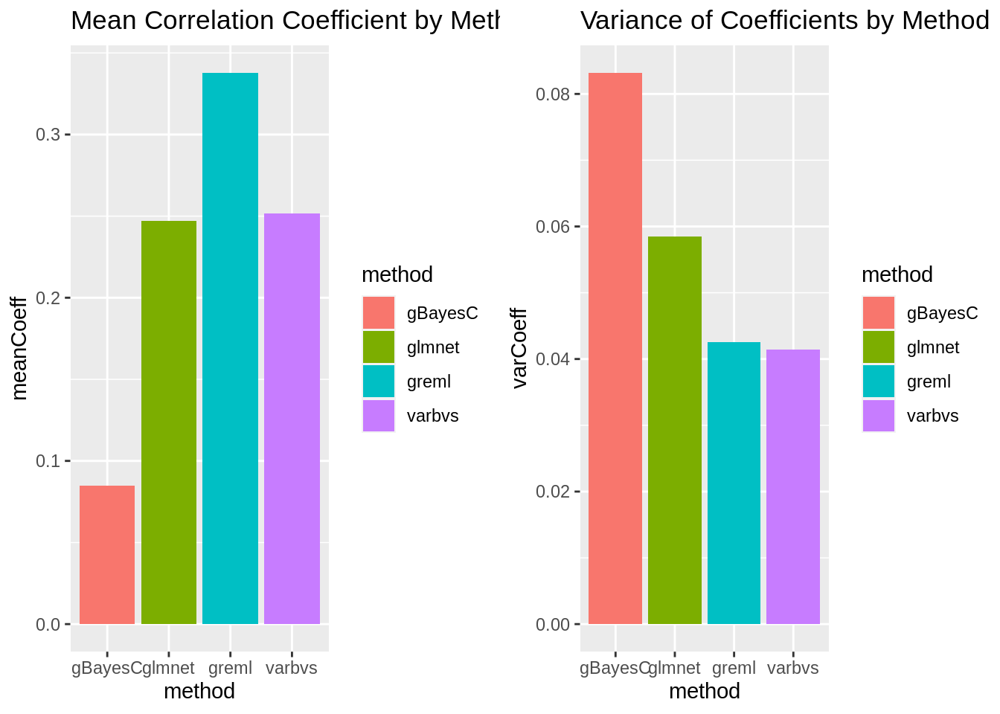

Last updated: 2023-03-13
Checks: 7 0
Knit directory: dgrp-starve/
This reproducible R Markdown analysis was created with workflowr (version 1.7.0). The Checks tab describes the reproducibility checks that were applied when the results were created. The Past versions tab lists the development history.
Great! Since the R Markdown file has been committed to the Git repository, you know the exact version of the code that produced these results.
Great job! The global environment was empty. Objects defined in the global environment can affect the analysis in your R Markdown file in unknown ways. For reproduciblity it’s best to always run the code in an empty environment.
The command set.seed(20221101) was run prior to running
the code in the R Markdown file. Setting a seed ensures that any results
that rely on randomness, e.g. subsampling or permutations, are
reproducible.
Great job! Recording the operating system, R version, and package versions is critical for reproducibility.
Nice! There were no cached chunks for this analysis, so you can be confident that you successfully produced the results during this run.
Great job! Using relative paths to the files within your workflowr project makes it easier to run your code on other machines.
Great! You are using Git for version control. Tracking code development and connecting the code version to the results is critical for reproducibility.
The results in this page were generated with repository version 97bd277. See the Past versions tab to see a history of the changes made to the R Markdown and HTML files.
Note that you need to be careful to ensure that all relevant files for
the analysis have been committed to Git prior to generating the results
(you can use wflow_publish or
wflow_git_commit). workflowr only checks the R Markdown
file, but you know if there are other scripts or data files that it
depends on. Below is the status of the Git repository when the results
were generated:
Ignored files:
Ignored: .RData
Untracked files:
Untracked: analysis/linearReg.Rmd
Untracked: code/PCA/
Untracked: code/data-prep/
Untracked: code/fabio/
Untracked: code/intro-starve/
Untracked: code/methodComp/
Untracked: code/regress/
Untracked: data/corLoop-f.rds
Untracked: data/corLoop-m.rds
Untracked: data/eQTL_traits_females.csv
Untracked: data/eQTL_traits_males.csv
Untracked: data/fRegress.txt
Untracked: data/fRegress_adj.txt
Untracked: data/gbayesC-f.Rds
Untracked: data/gbayesC-m.Rds
Untracked: data/gbayesC.Rds
Untracked: data/gbayes_100k-f.Rds
Untracked: data/gbayes_100k-m.Rds
Untracked: data/goGroups.txt
Untracked: data/mPart.txt
Untracked: data/mRegress.txt
Untracked: data/mRegress_adj.txt
Untracked: data/multiReg.rData
Untracked: data/starve-f.txt
Untracked: data/starve-m.txt
Untracked: data/xp-f.txt
Untracked: data/xp-m.txt
Untracked: data/y_save.txt
Untracked: figure/
Untracked: git2r_0.31.0.tar.gz
Untracked: notes/
Untracked: workflowr_1.7.0.tar.gz
Unstaged changes:
Deleted: analysis/gremlo.R
Deleted: analysis/stepwise-f.Rmd
Deleted: analysis/stepwise-m.Rmd
Deleted: analysis/testing.R
Modified: analysis/trace.Rmd
Deleted: code/baseScript-lineComp.R
Deleted: code/combineSNP.R
Deleted: code/four-comp.76979.err
Deleted: code/four-comp.76979.out
Deleted: code/four-comp.sbatch
Deleted: code/fourLinePrep.R
Deleted: code/line_avgMinus.R
Deleted: code/line_avgPlus.R
Deleted: code/line_difMinus.R
Deleted: code/line_difPlus.R
Deleted: code/snpGene.R
Deleted: code/starveDataPrep.R
Note that any generated files, e.g. HTML, png, CSS, etc., are not included in this status report because it is ok for generated content to have uncommitted changes.
These are the previous versions of the repository in which changes were
made to the R Markdown (analysis/methodComp-m.Rmd) and HTML
(docs/methodComp-m.html) files. If you’ve configured a
remote Git repository (see ?wflow_git_remote), click on the
hyperlinks in the table below to view the files as they were in that
past version.
| File | Version | Author | Date | Message |
|---|---|---|---|---|
| Rmd | 97bd277 | nklimko | 2023-03-13 | wflow_publish("analysis/methodComp-*.Rmd") |
| html | d924e6a | nklimko | 2023-03-06 | Build site. |
| Rmd | e7abfc8 | nklimko | 2023-03-06 | wflow_publish("analysis/methodComp-*") |
| html | 5fc994a | nklimko | 2023-03-05 | Build site. |
| Rmd | 05bbee2 | nklimko | 2023-03-05 | wflow_publish("analysis/methodComp-m.Rmd") |
The overarching goal of this process is to predict the phenotype for starvation resistance, a continuous trait, by using gene expression data, another continuous trait. This is done using k-fold cross validation to create models based on a subset of the data and calculating the correlation of that model with the remaining partition. By repeating this process multiple times with different training and testing partitions, model bias can be significantly reduced and allows for calculation of average correlation coefficients for each model. The primary difference between the methods in question is the prior distribution used.
#loop count and data limit
iter <- 48
#Parallel core count
#registerDoParallel(cores = 8)
#ggplot holder list
gg <- vector(mode='list', length=12)
# result storage elements
fit_greml <- vector(mode='list', length=iter)
fit_gbayesC <- vector(mode='list', length=iter)
fit_varbvs <- vector(mode='list', length=iter)
fit_glmnet <- vector(mode='list', length=iter)The first main set of data used for this analysis is a matrix of gene expression by DGRP line matched to raw starvation resistance. A second cluster of data sets provided by the Morgante Lab includes information on Wolbachia infection status and inversion status by line along with functions to adjust phenotypic values based on these two factors.
dataFlag <- TRUE
if(dataFlag){
#wolb infection and inversion status data with phenotype adjustment function
load("/data2/morgante_lab/data/dgrp/misc/adjustData.RData")
#expression data matched to line and starvation phenotype
#xp_f <- fread("data/xp-f.txt")
xp_m <- fread("data/xp-m.txt")
#setwd("C:/Users/noahk/OneDrive/Desktop/amogus")
#getwd()
#create matrix of only gene expression, trims line and starvation
X <- as.matrix(xp_m[,3:13577])
rownames(X) <- xp_m[,line]
W <- scale(X)
y_temp <- xp_m[,starvation]
dat <- data.frame(id=xp_m[,line], y=y_temp)
y <- adjustPheno(dat, "starvation")
} else{
# Toy Data set, 200x100 matrix
W <- matrix(rnorm(20000), ncol = 100)
colnames(W) <- paste0("gene", 1:ncol(W))
rownames(W) <- paste0("line", 1:nrow(W))
#model uses genes 1:5 and 10:20
y <- rowSums(W[, 1:5]) + rowSums(W[, 10:20]) + rnorm(nrow(W))
}Type III ANOVA table for covariates: starvation
Df Sum of Sq RSS AIC F value Pr(>F)
<none> 15975 893.32
factor(wolba) 1 3.041 15978 891.35 0.0354 0.8509
factor(In_2L_t) 2 299.141 16274 892.99 1.7415 0.1781
factor(In_2R_NS) 2 243.044 16218 892.31 1.4149 0.2455
factor(In_3R_P) 2 230.105 16205 892.15 1.3396 0.2645
factor(In_3R_K) 2 288.050 16263 892.85 1.6770 0.1898
factor(In_3R_Mo) 2 207.445 16182 891.87 1.2077 0.3012
Estimated effects
Estimate Std. Error t value Pr(>|t|)
(Intercept) 45.6614374 1.157976 39.4321227 2.909220e-92
factor(wolba)y -0.2574606 1.368248 -0.1881681 8.509500e-01
factor(In_2L_t)1 1.7198329 2.311372 0.7440744 4.577704e-01
factor(In_2L_t)2 -3.7780449 2.348592 -1.6086422 1.093906e-01
factor(In_2R_NS)1 -1.0811449 3.443957 -0.3139252 7.539297e-01
factor(In_2R_NS)2 5.8594026 3.595753 1.6295343 1.048923e-01
factor(In_3R_P)1 -2.0731924 3.879580 -0.5343858 5.937128e-01
factor(In_3R_P)2 7.1994131 4.718118 1.5259077 1.287315e-01
factor(In_3R_K)1 5.3513957 3.043456 1.7583284 8.033635e-02
factor(In_3R_K)2 3.7673764 6.668091 0.5649857 5.727643e-01
factor(In_3R_Mo)1 -3.0569154 3.189101 -0.9585510 3.390293e-01
factor(In_3R_Mo)2 -3.0977753 2.402719 -1.2892793 1.989020e-01The matrix containing only gene expression by line data was then scaled to an absolute max of 1. along with this, a Translation Relationship Matrix was generated by taking the crossproduct of the scaled expression matrix and scaling it down by the number of genes.
#model to solve for, vector of ones
mu <- matrix(rep(1, length(y)), ncol=1)
#names(mu) <- paste0("line", 1:length(mu))
rownames(mu) <- xp_m[,line]
TRM <- tcrossprod(W)/ncol(W)
# k-fold parameters
n <- length(y)
fold <- 10
iter <- 4810 was chosen for k-fold cross validation resulting in 19 lines per validation set and 179 lines per training set.
### sample analysis of gbayesC to show that convergence is working as expected
test_IDs <- sample(1:n, as.integer(n / fold))
W_train <- W[-test_IDs,]
W_test <- W[test_IDs,]
y_train <- y[-test_IDs]
y_test <- y[test_IDs]
### GBAYES-C
fitC <- qgg::gbayes(y=y_train, W=W_train, method="bayesC", scaleY=FALSE, nit=10000, nburn=5000)plotCustomBayes <- function(rdsPath){
# data read in is a gBayes fit object from qgg
#fitC <- readRDS("gbayesC-f.Rds")
fitC <- readRDS(rdsPath)
# calculate column narrow heritability
fitC$h2 <- fitC$vgs/(fitC$vgs+fitC$ves)
# data is extracted and stored
fitData <- data.table(iter=1:10000, ves=fitC$ves, vbs=fitC$vbs, vgs=fitC$vgs, h2=fitC$h2)
gg <- vector(mode='list', length=4)
gg[[1]] <- ggplot(fitData, aes(x=iter, y=ves)) +
geom_point(size=0.5) +
labs(x="Iteration", y="Ve") +
ggtitle("Posterior Mean for Residual Variance")
gg[[2]] <- ggplot(fitData, aes(x=iter, y=vbs)) +
geom_point(size=0.5) +
labs(x="Iteration", y="Vb") +
ggtitle("Posterior Mean for Marker Variance")
gg[[3]] <- ggplot(fitData, aes(x=iter, y=vgs)) +
geom_point(size=0.5) +
labs(x="Iteration", y="Vg") +
ggtitle("Posterior Mean for Genomic Variance")
gg[[4]] <- ggplot(fitData, aes(x=iter, y=ves)) +
geom_point(size=0.5) +
labs(x="Iteration", y="h^2") +
ggtitle("Posterior Mean for Narrow-sense Heritability")
return(gg)
}
# fit taken from one iteration, restored from Rds using code chunk shown above
#fitC <- readRDS("data/gbayesC-m.Rds")
plotHold <- plotCustomBayes("data/gbayesC-m.Rds")
plot_grid(plotHold[[1]],plotHold[[2]], ncol=2)
plot_grid(plotHold[[3]],plotHold[[4]], ncol=2)
#plotBayes(fit=fitC, what="trace")The following methods are currently implemented:
qgg::greml - Genomic Restricted Maximum Likelihood Estimation using Best Linear Unbiased Predictor. GREML uses a Gaussian prior distribution, performing the least shrinkage and no variable selection.
glmnet - glmnet uses LASSO, or least absolute shrinkage and selection operator. Bayesian LASSO uses a thick-tailed prior which performs greater shrinkage towards the mean than a Gaussian distribution.
qgg::gbayes - BayesC has been implemented using this command. BayesC uses a spike-slab prior which performs variable selection. This intentionally sets the effect of some genes expressed to zero which models the idea that some genes have no effect on the given trait.
varbvs - Bayesian variable selection performs variable selection using another spike-slab prior. This method avoids Markov Chain Monte Carlo methods by approximating the posterior distribution to reduce computational resources.
#this runs on the same data sets as greml
### qgg_gBayesC
### https://www.rdocumentation.org/packages/qgg/versions/1.1.1/topics/gbayes
# Bayes C: uses a “rounded spike” (low-variance Gaussian) at origin many small effects can contribute to polygenic component, reduces the dimensionality of the model (makes Gibbs sampling feasible).
#Parallel Header
#tempResult <-
iter <- 1
corLoop <- foreach(i=1:iter) %dopar% {
#Linear Header
#for(i in 1:iter){
corResult <- (1:4)
#setup train and test sets with trait vectors
test_IDs <- sample(1:n, as.integer(n / fold))
W_train <- W[-test_IDs,]
W_test <- W[test_IDs,]
y_train <- y[-test_IDs]
y_test <- y[test_IDs]
### GREML, qgg package
fitGreml <- qgg::greml(y=y, X=mu, GRM=list(A=TRM), validate = matrix(test_IDs,ncol=1), verbose=FALSE)
#Store coeff directly
fit_greml[[i]] <- fitGreml$accuracy$Corr
corResult[1] <- fitGreml$accuracy$Corr
### GBAYES-C
fitC <- qgg::gbayes(y=y_train, W=W_train, method="bayesC", scaleY=FALSE, nit=10000, nburn=5000)
# expected/calculated value for y_test
# \hat{y}_test = W_{test} * \hat{b} + \hat{mu}
y_calc <- W_test %*% fitC$b + mean(y_train)
# store coeff
fit_gbayesC[[i]] <- cor(y_test, y_calc)
corResult[2] <- cor(y_test, y_calc)
if(i==1){
print(paste0("gbayesC trace plots from validate set ",i))
plotBayes(fit=list(fitC), what = "trace")
}
### VARBVS
fitVarb <- varbvs::varbvs(X = W_train, NULL, y=y_train, family = "gaussian", logodds=seq(-3.5,-1,0.1), sa = 1, verbose=FALSE)
# \hat{y}_test = W_{test} * \hat{b} + \hat{mu}
y_calc <- W_test %*% fitVarb$beta + mean(y_train)
fit_varbvs[[i]] <- cor(y_test, y_calc)
corResult[3] <- cor(y_test, y_calc)
### GLMNET
fitlm <- glmnet::cv.glmnet(x=W_train, y=y_train, alpha=1)
b_hat <- glmnet::coef.glmnet(fitlm, s="lambda.min")
y_int <- b_hat[1]
b_hat <- b_hat[2:length(b_hat)]
y_calc <- W_test %*% b_hat + y_int
fit_glmnet[[i]] <- cor(y_test, y_calc)
corResult[4] <- cor(y_test, y_calc)
corResult
}# results loaded from correlation loop structure
corLoop <- readRDS("data/corLoop-m.rds")
for(i in 1:iter){
fit_greml[[i]] <- corLoop[[i]][1]
fit_gbayesC[[i]] <- corLoop[[i]][2]
fit_varbvs[[i]] <- corLoop[[i]][3]
fit_glmnet[[i]] <- corLoop[[i]][4]
}iter <- 48
bint <- 10
### qgg_greml
qgg_greml_data <- as.data.table(fit_greml)
qgg_greml_data <- transpose(qgg_greml_data)
colnames(qgg_greml_data) <- "cor"
#print(paste0("GREML"))
#print(paste0("Mean correlation coefficient: ", mean(qgg_greml_data[,cor])))
#print(paste0("Variance of correlation coefficient: ", var(qgg_greml_data)))
gg[[1]] <- ggplot(qgg_greml_data, aes(x=cor)) +
geom_histogram(bins=bint, fill='red') +
labs(x="Corr Coeff") +
ggtitle("GREML CV Correlations Histogram")
### qgg_gbayesC
qgg_gbayesC_data <- as.data.table(fit_gbayesC)
qgg_gbayesC_data <- transpose(qgg_gbayesC_data)
colnames(qgg_gbayesC_data) <- "cor"
#print(paste0("gBayesC"))
#print(paste0("Mean correlation coefficient: ", mean(qgg_gbayesC_data[,cor])))
#print(paste0("Variance of correlation coefficient: ", var(qgg_gbayesC_data)))
gg[[2]] <- ggplot(qgg_gbayesC_data, aes(x=cor)) +
geom_histogram(bins=bint, fill='red') +
labs(x="Corr Coeff") +
ggtitle("gBayesC Prediction Corr Histogram")
### VARBVS
varbvs_data <- as.data.table(fit_varbvs)
varbvs_data <- transpose(varbvs_data)
colnames(varbvs_data) <- "cor"
#print(paste0("VARBVS"))
#print(paste0("Mean correlation coefficient: ", mean(varbvs_data[,cor])))
#print(paste0("Variance of correlation coefficient: ", var(varbvs_data)))
gg[[3]] <- ggplot(varbvs_data, aes(x=cor)) +
geom_histogram(bins=bint, fill='red') +
labs(x="Corr Coeff") +
ggtitle("varbvs Prediction Corr Histogram")
### GLMNET
glmnet_data <- as.data.table(fit_glmnet)
glmnet_data <- transpose(glmnet_data)
colnames(glmnet_data) <- "cor"
#print(paste0("GLMNET"))
#print(paste0("Mean correlation coefficient: ", mean(glmnet_data[,cor])))
#print(paste0("Variance of correlation coefficient: ", var(glmnet_data)))
gg[[4]] <- ggplot(glmnet_data, aes(x=cor)) +
geom_histogram(bins=bint, fill='red') +
labs(x="Corr Coeff") +
ggtitle("glmnet Prediction Corr Histogram")result <- data.table(method="greml", meanCoeff=mean(qgg_greml_data[,cor]))
result[,varCoeff := var(qgg_greml_data)]
temp <- data.table(method="gBayesC", meanCoeff=mean(qgg_gbayesC_data[,cor]))
temp[,varCoeff := var(qgg_gbayesC_data)]
result <- rbind(result, temp)
temp <- data.table(method="varbvs", meanCoeff=mean(varbvs_data[,cor]))
temp[,varCoeff := var(varbvs_data)]
result <- rbind(result, temp)
temp <- data.table(method="glmnet", meanCoeff=mean(glmnet_data[,cor]))
temp[,varCoeff := var(glmnet_data)]
result <- rbind(result, temp)
# Map the time of day to different fill colors
#gg[[5]] <- ggplot(data=result, aes(x=method, y=meanCoeff, fill=method)) +
#geom_bar(stat="identity")
#boxplot(result$meanCoeff)
gg[[5]] <- ggplot(data=result, aes(x=method, y=meanCoeff, fill=method)) +
geom_bar(stat="identity") +
ggtitle("Mean Correlation Coefficient by Method")
gg[[6]] <- ggplot(data=result, aes(x=method, y=varCoeff, fill=method)) +
geom_bar(stat="identity") +
ggtitle("Variance of Coefficients by Method")
#gg[[5]] <- ggplot(result, aes(x=meanCoeff)) +
# geom_boxplot() +
# coord_flip()
#gg[[6]] <- ggplot(result, aes(x=varCoeff)) +
# geom_boxplot() +
# coord_flip()plot_grid(gg[[1]],gg[[2]],gg[[3]],gg[[4]], ncol=2)
plot_grid(gg[[5]],gg[[6]], ncol=2)
sessionInfo()R version 4.1.2 (2021-11-01)
Platform: x86_64-pc-linux-gnu (64-bit)
Running under: Rocky Linux 8.5 (Green Obsidian)
Matrix products: default
BLAS/LAPACK: /opt/ohpc/pub/libs/gnu9/openblas/0.3.7/lib/libopenblasp-r0.3.7.so
locale:
[1] LC_CTYPE=en_US.UTF-8 LC_NUMERIC=C
[3] LC_TIME=en_US.UTF-8 LC_COLLATE=en_US.UTF-8
[5] LC_MONETARY=en_US.UTF-8 LC_MESSAGES=en_US.UTF-8
[7] LC_PAPER=en_US.UTF-8 LC_NAME=C
[9] LC_ADDRESS=C LC_TELEPHONE=C
[11] LC_MEASUREMENT=en_US.UTF-8 LC_IDENTIFICATION=C
attached base packages:
[1] parallel stats graphics grDevices utils datasets methods
[8] base
other attached packages:
[1] glmnet_4.1-6 Matrix_1.5-3 varbvs_2.5-16 qgg_1.1.1
[5] doParallel_1.0.17 iterators_1.0.14 foreach_1.5.2 qqman_0.1.8
[9] cowplot_1.1.1 ggplot2_3.4.1 data.table_1.14.8 dplyr_1.1.0
[13] workflowr_1.7.0
loaded via a namespace (and not attached):
[1] httr_1.4.5 sass_0.4.5 nor1mix_1.3-0
[4] jsonlite_1.8.4 splines_4.1.2 bslib_0.4.2
[7] getPass_0.2-2 statmod_1.5.0 highr_0.10
[10] latticeExtra_0.6-30 yaml_2.3.7 pillar_1.8.1
[13] lattice_0.20-45 quantreg_5.94 glue_1.6.2
[16] digest_0.6.31 RColorBrewer_1.1-3 promises_1.2.0.1
[19] colorspace_2.1-0 htmltools_0.5.4 httpuv_1.6.9
[22] pkgconfig_2.0.3 SparseM_1.81 calibrate_1.7.7
[25] scales_1.2.1 processx_3.8.0 whisker_0.4.1
[28] jpeg_0.1-10 later_1.3.0 MatrixModels_0.5-1
[31] git2r_0.31.0 tibble_3.1.8 generics_0.1.3
[34] farver_2.1.1 cachem_1.0.7 withr_2.5.0
[37] cli_3.6.0 survival_3.5-3 magrittr_2.0.3
[40] deldir_1.0-6 mcmc_0.9-7 evaluate_0.20
[43] ps_1.7.2 fs_1.6.1 fansi_1.0.4
[46] MASS_7.3-58.2 tools_4.1.2 lifecycle_1.0.3
[49] stringr_1.5.0 MCMCpack_1.6-3 interp_1.1-3
[52] munsell_0.5.0 callr_3.7.3 compiler_4.1.2
[55] jquerylib_0.1.4 rlang_1.0.6 grid_4.1.2
[58] rstudioapi_0.14 labeling_0.4.2 rmarkdown_2.20
[61] gtable_0.3.1 codetools_0.2-19 R6_2.5.1
[64] knitr_1.42 fastmap_1.1.1 utf8_1.2.3
[67] rprojroot_2.0.3 shape_1.4.6 stringi_1.7.12
[70] Rcpp_1.0.10 vctrs_0.5.2 png_0.1-8
[73] tidyselect_1.2.0 xfun_0.37 coda_0.19-4